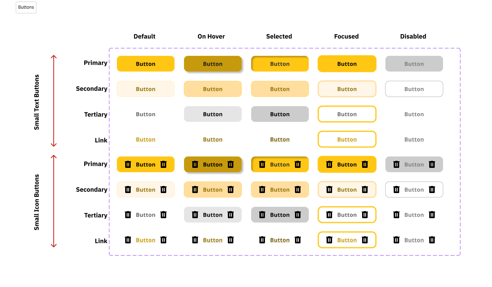
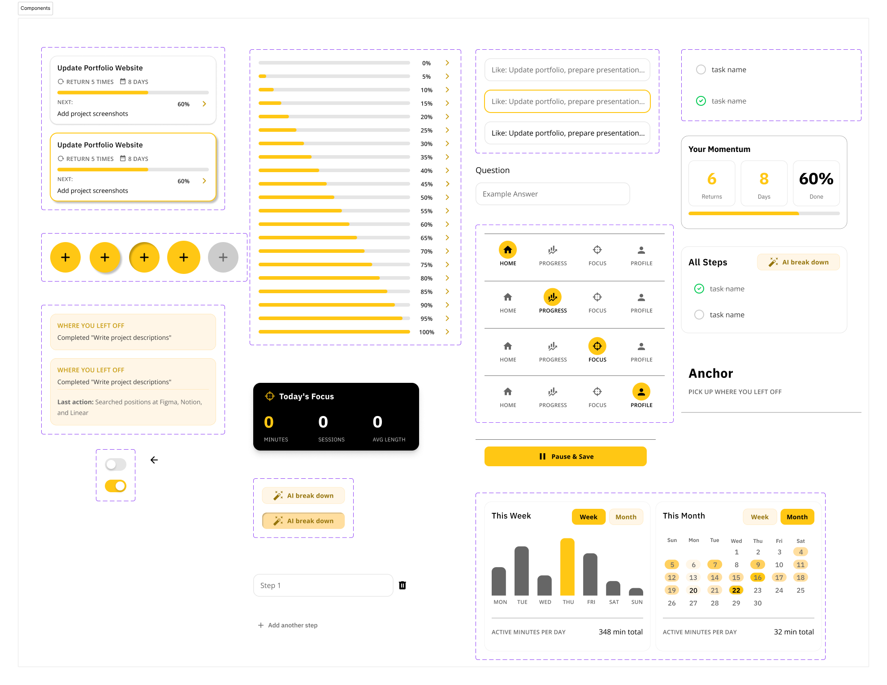
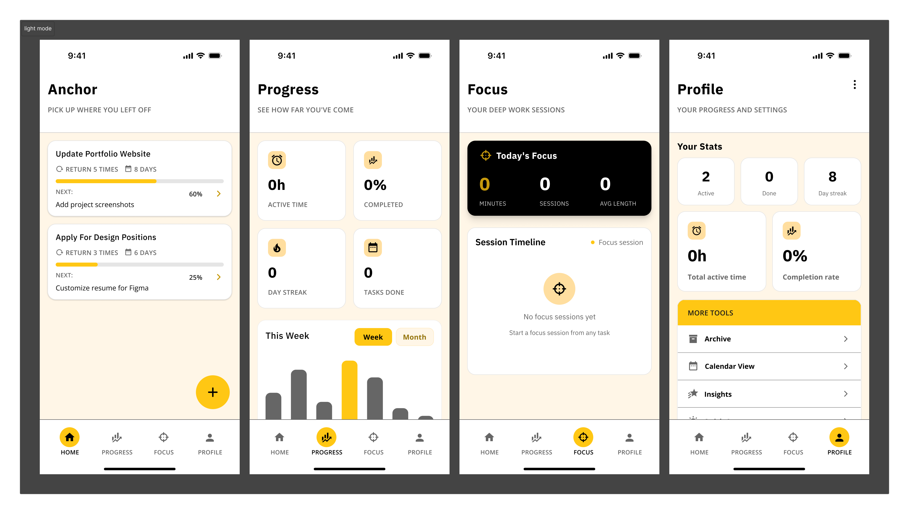
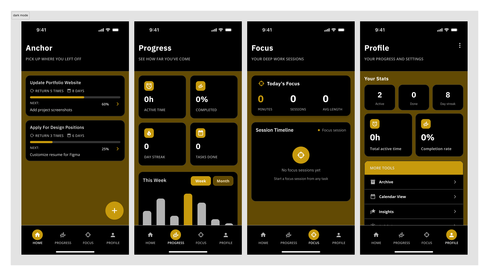

Anchor
An ADHD-focused productivity app that helps users pick up where they left off — breaking tasks into steps, building momentum, and reducing the paralysis of a blank to-do list.
ROLE
Solo UX/UI Designer
TIMELINE
8 weeks
TOOLS
Figma
PLATFORM
iOS Mobile
TL;DR — AT A GLANCE
Situation
People with ADHD struggle to re-engage with tasks after interruptions — the mental load of figuring out "where was I?" is often enough to abandon the task entirely.
Task
Design an ADHD-friendly productivity app that reduces task initiation friction and helps users build sustainable momentum.
Actions
Designed AI-powered task breakdown, a "Where You Left Off" re-entry screen, momentum tracking, and a Quick Capture feature — all built around reducing cognitive load.
Results
Hi-fi prototype with full task management flow, component library, and key ADHD-aware interactions validated through self-testing and peer feedback.
✦ SITUATION
The ADHD productivity gap
Most productivity apps are designed for neurotypical users — long task lists, streaks, timers. For people with ADHD, these systems become another source of guilt. The real problem isn't motivation: it's task initiation and re-entry after interruption.
What existing tools get wrong
- • Blank to-do lists cause decision paralysis
- • Streaks create anxiety when broken
- • No concept of "where I left off"
- • Overwhelming notifications at the wrong times
What ADHD users actually need
- • Immediate context when reopening the app
- • Tasks broken into actionable micro-steps
- • Gentle momentum cues, not guilt-based streaks
- • Low-friction capture before the thought disappears
✦ TASK
Design goal: lower every barrier to starting
The core design challenge was to build a system that meets users where they are — not where they wish they were. That meant designing around the ADHD experience: hyperfocus windows, mid-task abandonment, and the shame spiral of forgotten tasks.
Design principles I committed to
Reduce friction
Every extra tap is a reason to give up. Defaults should be smart.
Honour time
Show users where they are in their day — not just what's left undone.
Celebrate small wins
Momentum is built through tiny victories — make them visible.
✦ RESEARCH
Understanding the ADHD productivity loop
I conducted secondary research into ADHD executive function literature and audited five popular productivity apps (Todoist, Notion, Things 3, Structured, Goblin Tools) through the lens of ADHD usability. I also gathered informal feedback from peers with ADHD diagnoses.
Task initiation is the hardest part — not the task itself
People with ADHD often know exactly what to do. The barrier is starting. A re-entry screen that answers "what should I do right now?" cuts through the paralysis immediately.
Vague tasks lead to abandonment
"Work on presentation" is paralyzing. "Find 3 reference images" is actionable. AI step breakdown converts vague intentions into manageable actions.
Shame from missed tasks compounds avoidance
Existing apps surface undone tasks prominently. Anchor's approach: celebrate what was done, gently surface what's next — not what failed.
Quick Capture is essential — thoughts evaporate
ADHD working memory is limited. A one-tap "save this thought" that works without leaving the current context prevents the frustration of forgotten intentions.
✦ DESIGN DECISIONS
Five features built around ADHD behaviour
Where You Left Off — Re-entry screen
The home screen opens to exactly one thing: the task you were last working on, with your last action remembered and your next step ready. No scanning a long list, no decision fatigue.
Design decision:
Rather than showing a full dashboard on open, Anchor asks one question: "Ready to continue?" This single-question framing reduces the cold-start problem ADHD users face every session.
AI Task Breakdown
Type a vague task — "prepare for interview" — and Anchor breaks it into concrete, sequenced micro-steps. Users can accept, edit, or skip steps. No task is too big to start.
Design decision:
Steps are presented one at a time during execution, not as a checklist upfront. Seeing "Step 2 of 6" feels manageable; seeing all 6 at once can trigger avoidance.
Momentum Tracker
Instead of streaks (which punish gaps), Anchor shows "Returns × Days × Done" as a Momentum score. Coming back after a break doesn't reset progress — it adds to it.
Design decision:
Streak systems alienate ADHD users whose consistency is naturally variable. Momentum reframes the metric: consistency over time matters more than perfection every day.
Quick Capture
A floating "+" button saves thoughts, tasks, or ideas instantly without navigating away from current work. Captured items sit in an inbox to be processed later — during a calmer moment.
Design decision:
Separating capture from organisation reduces the "I need to figure out where this goes before I can save it" friction. Capture now, sort later.
Focus Session + Anchor Task
Users commit to one "Anchor Task" per focus session — a single intention that grounds the work period. After the session, Anchor logs what was completed and surfaces the next natural step.
Design decision:
Choice overload kills execution for ADHD brains. Single-task focus sessions force prioritisation at the session level, not the list level.
Component library built alongside the design
I designed a full Figma component library — buttons (primary, secondary, tertiary, link) across 4 sizes × 5 states, navigation bars, task cards, modals, and calendar components — ensuring consistent ADHD-friendly affordances throughout.


✦ RESULTS
A hi-fi prototype that thinks like an ADHD user
The final prototype covers the full task lifecycle — from Quick Capture through breakdown, focus session, completion, and re-entry. All key interactions are designed to reduce the points where ADHD users typically disengage.
5
Core screens designed with full component coverage
1
Principle guiding every screen: lower the barrier to starting
Solo
End-to-end: research, IA, wireframes, hi-fi, component library


View the Figma Prototype
Full task flow — from capture to completion
✦ REFLECTION
What I learned designing for ADHD
Anchor was my first solo project from scratch — no brief, no client, no team. That constraint pushed me to be more intentional about every decision, because there was no one else to validate it.
Accessibility as a design constraint, not an afterthought
Designing for ADHD forced me to confront how most productivity apps are implicitly designed for neurotypical users. Cognitive accessibility should be a first-class concern in every product I work on.
System design matters as much as UI design
The component library wasn't just polish — it was how I kept 50+ screens consistent. Building it early meant later decisions were faster and the product felt coherent, not cobbled together.
What I'd do differently
I'd prioritise usability testing earlier and with actual ADHD users, not just inferences from secondary research. The AI breakdown feature especially needs real validation — what granularity of steps is helpful vs. overwhelming?
Anchor is a project I continue to iterate on. Next phase: recruiting ADHD participants for moderated usability sessions and testing the re-entry screen against a standard to-do list baseline.